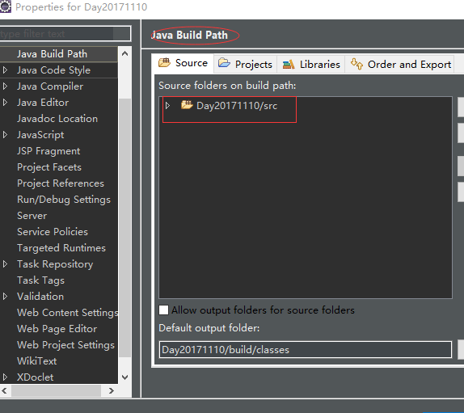

参考
http://www.jianshu.com/p/0ccaa4af05fc（**着重看**）
http://www.jianshu.com/p/19a7a16d66b4
http://www.cnblogs.com/mafly/p/5839863.html
http://www.cnblogs.com/shinejaie/p/5244258.html
常用注解
搭建环境
①、Eclipse 搭建 Spring 项目
- New-Web-Dynamic Web Project-next-起个名字-finish
- 接下来一定要将项目的字符集改为UTF-8
- 右键项目——properties,点击Resource,Other一栏选择UTF-8(如果本来就是UTF-8就不用改)
②、导入 jar 包
- 下载Sping框架的jar包，自己找，将jar包解压移到项目的/WebContent/WEB-INF/lib下(查看.settings文件夹下面的 org.eclipse.wst.common.component 文件，检查 source-path 是不是 /WebContent ，不是的话就在对应的文件夹下配置)。
- WEB-INF作为Tomcat启动后的安全文件夹，浏览器不能访问到该目录下的资源。Tomcat启动会默认在此目录下读取相应配置文件。
- 右击项目名，Build Path - Configure Bulid Path… - Libraries - Add JARs…，在弹出的框里边找到项目的/WebContent/WEB-INF/lib，这样就看到刚刚你复制过来的 jar 包了。
③、配置！！！
官网对框架的解释说明：
Spring MVC 框架是围绕一个 DispatcherServlet 来设计的，这个 Servlet 会把请求分发给各个处理器，并支持可配置的处理器映射、视图渲染、本地化、时区与主题渲染等，甚至还能支持文件上传。
处理器是你的应用中注解了 @Controller 和 @RequestMapping 的类和方法，Spring 为处理器方法提供了极其多样灵活的配置。
关于 servlet
servlet 是在服务器上运行的小程序，譬如用 java 编写的 server 端程序。大致过程如下：
1、客户端（浏览器）访问网站，网站发送请求至服务器（tomcat 或 weblogic 等）；
2、服务器将请求信息发送至 servlet。
3、servlet 生成响应内容（我们写的程序控制响应）并将其传送给服务器。
4、服务器将响应返回给客户端。
5、客户端进行展示。
1.编写 web.xml
- 当我们打开WebContent/WEB-INF目录的时候，发现里面只有一个lib目录，这是存放各种jar包的地方。我们知道一个web项目必须要有一个web.xml文件才行。1234567<?xml version="1.0" encoding="UTF-8"?><web-app xmlns:xsi="http://www.w3.org/2001/XMLSchema-instance"xmlns="http://xmlns.jcp.org/xml/ns/javaee"xsi:schemaLocation="http://xmlns.jcp.org/xml/ns/javaee http://xmlns.jcp.org/xml/ns/javaee/web-app_3_1.xsd" id="WebApp_ID"><!-- 这是项目的名称 --><display-name>springmvc</display-name></web-app>
2.验证 web 项目是否搭建成功
为了验证到目前为止的正确性，我们在WebContent目录下面新建一个jsp文件。名字就叫index.jsp
1234567<%@ page language="java" contentType="text/html; charset=UTF-8" pageEncoding="UTF-8"%><html><head><meta charset="UTF-8" /></head><body>恭喜，web項目已經成功搭建！</body></html>我们现在就将这个项目部署到Tomcat,来验证是否可以跑起来。
- 在项目上右键——Debug As——Debug on Server。直接点击Finish
- 经过一段时间，控制台开始打印日志信息，当我们看到这些信息的时候，说明Tomcat已经启动完毕了。
- 让我们打开浏览器，在地址栏输入以下信息
- http://localhost:8088/springmvc/index.jsp
- 我电脑上Tomcat配置的端口号是8088，具体情况视你自己的Tomcat决定，可能是8080等。
- 可见，能够成功访问页面了，这说明我们到目前为止的操作是正确的。
3. 集成SpringMVC
我们在web.xml文件里面添加下面的配置
3.1 配置监听器
3.2 配置过滤器，解决POST乱码问题
3.3 配置SpringMVC分发器，拦截所有请求
在这个配置中，我们规定了 DispatcherServlet 的关联 XML 文件名称叫做 dispatcher-servlet。
注意，这里的路径是相对于web.xml来说的，也就是说，这个文件也在WEB-INF的根目录下。
所以，我们需要在WEB-INF的根目录下新建一个dispatcher-servlet.xml文件。
至此，web.xml文件的编写就告一段落了。
如果没有用注解，用最原始的方式访问后台java类时，那么假设<a href="test">，这里的test应该是<url-pattern>/test</url-pattern>中配置的test，如果不一样则访问不了
3.4 编写dispatcher-servlet.xml
dispatcher-servlet.xml 的作用就是配置SpringMVC分发器。
根据配置，有三个需要注意的地方。
- （1）、它会扫描 com.springmvc 包下所有的 java 类，但凡是遇到有注解的，比如 @Controller, @Service, @Autowired,就会将它们加入到 Spring 的 bean 工厂里面去。
- （2）、所有的静态资源文件，比如说 js, css, images 都需要放在 /resources 目录下，这个目录现在我们还没有建。
- （3）、所有的展示页面，比如 jsp 文件，都需要放置在 /WEB-INF/pages 目录下，这个目录现在我们也没有建。、
- （4）、如果页面存放路径没有设置那么访问http://localhost:8080/SpringMVCDemon/resources/html/index.html，即代表访问WebContent/resources/html/index.html
- （5）、最近在学习尚硅谷SpringMVC视频时发现，最开始他在src文件夹下配了个springmvc.xml，然后我照着这边
<context:component-scan base-package="com.springmvc.*"></context:component-scan>在com.springmvc后面加了.*，结果怎么也跳不到那个页面，我就很奇怪了，后来仔细看了视频，发现他后面没有.*，我照着试了下，这就可以了。看来这个配置文件位置不一样，配置也要跟着改。
后来，我问了春春，他说我在web.xml指定了位置(<param-value>classpath:springmvc.xml</param-value>)，如果不指定的话位置就在位置就是在web.xml的同一级。春春让我加.* *试试(中间不用空格,这里因为排版问题加了空格才能显示)，结果也能跳转。或者在加一层文件夹就可以用.*了。春春初步估计单个*使用的话下面必须是文件夹。

分割
OK，我们把对应的目录加上。
首先是 Java 文件的目录
- 我们在 src 文件夹右键，新建一个 com 包，再在里面建一个 springmvc 包，或者用.的方式一起建。
- 根据 SpringMVC 的分层，我们在 springmvc 包下面建三个包，分别是 controller, service, dao
- 这样的话，当我们项目一旦启动，springmvc 就会扫描这三个包，将里面但凡是有注解的类都提取出来，放进 Spring 容器（或者说 Spring 的 bean 工厂），借由 Spring 容器来统一管理。这也是你从来没有去 new 一个 Controller 的原因。
接下来，我们来建静态资源的目录。- 在 WebContent 目录下新建一个 resources 文件夹。
- 然后顺便把 js, css, img 的文件夹都建一下(建在resources下)，这里就存放我们的静态资源文件。
- 最后，我们在 WEB-INF 目录下建一个 pages 文件夹，作为展示页面的存放目录。
- 将之前的 index.jsp 拷贝进来
- 这样就配置的差不多了。
4. 导包和验证
我们将jar包放到lib目录：
然后启动项目，验证一下到目前为止的构建是否正确。
打开Servers视图，点击如图像是甲虫一样的图标。
发现报错了，错误信息如下：
- java.io.FileNotFoundException:Could not open ServletContext resource [/WEB-INF/applicationContext.xml]
- 它说我们在WEB-INF下面少了一个applicationContext.xml 这个文件，原来，我们少了对SpringBean工厂的配置，它的意思就是说，我们要规定一下，在Spring容器启动的时候，需要自动加载哪些东西？
- 于是，我们把 applicationContext.xml 加上。(加在WEB-INF文件夹下)
里面我们啥也不配置，再次启动Tomcat，成功。
5. 配置ViewController
我们知道，WEB-INF目录下的任何资源都是无法直接通过浏览器的url地址去访问的，保证了安全性。这也是我们为什么把页面都放在该目录下的原因。
为了有所区分，我们还单独建立了一个pages文件夹，将这些页面保存起来。
现在，为了访问这个页面，我们需要用到SpringMVC的页面跳转机制。
- 我们在Controller包下新建一个ViewController
我只需要将想要访问的页面放在path里面，通过url传进来就行了。
因为添加了java类，因此我们重新启动Tomcat。
启动完成后，在地址栏输入：(有的人可能端口号是8080)
http://localhost:8088/springmvc/view?path=index
结果 报404
没关系，我们看他报什么错。
- message /springmvc/WEB-INF/pagesindex.jsp
pagesindex.jsp是什么鬼？？
原来，在dispatcher-servlet.xml中，我们少写了一个 “/“
在pages后面加个/
OK
6. 引入静态资源
比如，我在resources/img目录下放了一张图片，怎么引入到index.jsp呢？
- 的确，这是一种方式。可是，它有一个缺点就是根路径写死了，我们肯定不希望这样的。
其实，我们可以在viewController里面拿到项目根路径，然后传递到jsp页面就OK了。
1234567891011121314151617package com.springmvc.controller;import javax.servlet.http.HttpServletRequest;import org.springframework.stereotype.Controller;import org.springframework.web.bind.annotation.RequestMapping;import org.springframework.web.servlet.ModelAndView;@Controllerpublic class ViewController {@RequestMapping("/view")public ModelAndView view(HttpServletRequest request){String path = request.getParameter("path") + "";ModelAndView mav = new ModelAndView();String contextPath = request.getContextPath();mav.addObject("contextPath",contextPath);mav.setViewName(path);return mav;}}我们把调试信息 “恭喜，web項目已經成功搭建！” 删掉。
12345678910111213<%@ page language="java" contentType="text/html; charset=UTF-8" pageEncoding="UTF-8"%><html><head><meta charset="UTF-8" /></head><style>body {background : url(${contextPath}/resources/img/bg.jpg);background-size : 100% 100%;}</style><body> </body></html>
${contextPath} 可以取到Controller传过来的contextPath值。
成功了！